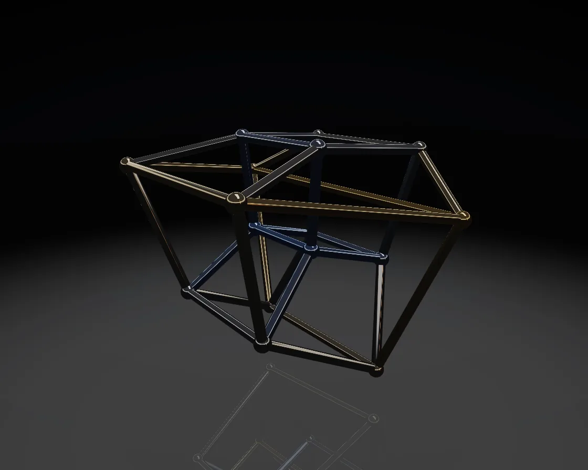

Tesseract
Tesseract is a WebGL effect: rigid 4D rotation projected to 3D turns the cube inside out. One plain JavaScript file with no dependencies; add it with npx motion-library add tesseract.

Open it live, tune it and copy the code
What is Tesseract?
A chrome four-dimensional cube turns inside out as it rotates.
How does Tesseract work?
Sixteen ±1 corners rotate in planes involving w, then a perspective divide along w projects them to 3D, so the inner cube swallows the outer.
How do I add Tesseract to my website?
- In your project folder, run
npx motion-library add tesseract. It writesanimations/tesseract.js. Needs Node 18 or newer. - Import it and call it with a container element that has a size:
import fx from './animations/tesseract.js'; const stop = fx(document.querySelector('#hero')); - Call
stop()to clean up, for example when a component unmounts.
Every setting below is also a flag, so you can install it already tuned: npx motion-library add tesseract --spin 2.5.
What settings can I tweak?
| Setting | Flag | Default | Range | Step |
|---|---|---|---|---|
| Spin | --spin | 1 | 0.2 to 2.5 | 0.1 |
| Tube thickness | --tube | 1 | 0.4 to 2.5 | 0.1 |
| 4D perspective | --perspective | 1 | 0.4 to 2 | 0.05 |
Specifications
- Renderer
- WebGL
- Category
- Chrome & 3D
- Dependencies
- None
- File size
- 11.6 KB, unminified
- Interactive
- No: it plays on its own
- Reduced motion
- Plays the same for everyone
- Licence
- MIT-0: use it anywhere, no credit needed
Source code
// Tesseract: a cube in four dimensions, turning. Its 16 corners are every combination of ±1 in x, y, z and w, and
// its 32 edges join corners that differ in one coordinate. It rotates in the planes that involve w, then is projected
// into 3D the way a 3D object is projected onto a screen: things further along w come out smaller. That is why the
// inner cube grows, swallows the outer one and turns inside out; nothing bends, it is a rigid rotation seen from
// one dimension down. Edges are chrome tubes, gold on the near-w side and blue on the far side, over a glossy floor.
const PARAMS = { spin: 1, tube: 1, perspective: 1 };
export default function (stage) {
const canvas = document.createElement('canvas');
canvas.style.cssText = 'position:absolute;inset:0;width:100%;height:100%;display:block';
stage.append(canvas);
const gl = canvas.getContext('webgl2', { antialias: true });
if (!gl) { stage.textContent = 'This needs WebGL2.'; return () => canvas.remove(); }
// the 4D cube
const V4 = []; for (let i = 0; i < 16; i++) V4.push([i & 1 ? 1 : -1, i & 2 ? 1 : -1, i & 4 ? 1 : -1, i & 8 ? 1 : -1]);
const E = []; for (let i = 0; i < 16; i++) for (let k = 0; k < 4; k++) { const j = i ^ (1 << k); if (j > i) E.push([i, j]); }
const sh = (type, src) => { const s = gl.createShader(type); gl.shaderSource(s, src); gl.compileShader(s); if (!gl.getShaderParameter(s, gl.COMPILE_STATUS)) throw new Error(gl.getShaderInfoLog(s)); return s; };
const prog = (vs, fs) => {
const p = gl.createProgram(); gl.attachShader(p, sh(gl.VERTEX_SHADER, vs)); gl.attachShader(p, sh(gl.FRAGMENT_SHADER, fs)); gl.linkProgram(p);
if (!gl.getProgramParameter(p, gl.LINK_STATUS)) throw new Error(gl.getProgramInfoLog(p));
const u = {}; for (let i = 0, n = gl.getProgramParameter(p, gl.ACTIVE_UNIFORMS); i < n; i++) { const nm = gl.getActiveUniform(p, i).name; u[nm] = gl.getUniformLocation(p, nm); }
return { p, u };
};
const ENV = `
vec3 env(vec3 d) { // a dark studio: overhead softbox, warm and cool strips, a ring light
vec3 c = mix(vec3(.05, .055, .07), vec3(.26, .27, .31), smoothstep(-.1, .7, d.y));
vec2 q = d.xz / max(d.y, .05);
c += vec3(1.) * 2.6 * smoothstep(.06, .0, abs(q.x - .1) - .55) * smoothstep(.06, .0, abs(q.y + .2) - .16) * step(0., d.y);
float az = atan(d.x, d.z);
c += vec3(1., .55, .3) * 1.6 * smoothstep(.1, .02, abs(az - 1.9)) * smoothstep(-.05, .2, d.y) * smoothstep(.75, .3, d.y);
c += vec3(.35, .6, 1.) * 1.4 * smoothstep(.1, .02, abs(az + 1.6)) * smoothstep(-.05, .2, d.y) * smoothstep(.75, .3, d.y);
c += vec3(1., .97, .92) * 1.3 * smoothstep(.07, .0, abs(d.y - .34) - .05);
return c;
}
vec3 aces(vec3 x) { return clamp((x * (2.51 * x + .03)) / (x * (2.43 * x + .59) + .14), 0., 1.); }`;
// tubes and balls share one shader: a mesh placed per instance, mirrored below the floor for the reflection pass
const meshVS = `#version 300 es
layout(location = 0) in vec3 P; layout(location = 1) in vec3 Nn;
layout(location = 2) in vec3 IA; layout(location = 3) in vec3 IB; layout(location = 4) in vec2 IT; // ends (or centre), tint, radius
uniform mat4 M; uniform float MIR, FLOOR; out vec3 n; out vec3 w; out float tint;
void main() {
vec3 ax = IB - IA; float L = length(ax); vec3 z = L > 1e-5 ? ax / L : vec3(0, 1, 0);
vec3 x = normalize(abs(z.y) < .9 ? cross(z, vec3(0, 1, 0)) : cross(z, vec3(1, 0, 0))), y = cross(z, x);
vec3 p = IA + (x * P.x + y * P.y) * IT.y + z * P.z * L, nn = x * Nn.x + y * Nn.y + z * Nn.z;
if (L < 1e-5) { p = IA + P * IT.y; nn = Nn; } // a ball
if (MIR > .5) { p.y = 2. * FLOOR - p.y; nn.y = -nn.y; }
n = nn; w = p; tint = IT.x; gl_Position = M * vec4(p, 1);
}`;
const meshFS = `#version 300 es
precision highp float; in vec3 n; in vec3 w; in float tint; out vec4 o; uniform vec3 E; uniform float MIR;
${ENV}
void main() {
vec3 N = normalize(n), V = normalize(E - w), R = reflect(-V, N);
vec3 metal = mix(vec3(.55, .72, 1.), vec3(1., .78, .42), tint); // blue on the far side of w, gold on the near side
float fr = .45 + .55 * pow(1. - max(dot(N, V), 0.), 4.);
vec3 c = env(R) * metal * fr + metal * .04;
if (MIR > .5) c *= .32;
o = vec4(aces(c), 1);
}`;
const floorVS = `#version 300 es
layout(location = 0) in vec2 P; uniform mat4 M; uniform float FLOOR; out vec3 w; void main() { w = vec3(P.x, FLOOR, P.y); gl_Position = M * vec4(w, 1); }`;
const floorFS = `#version 300 es
precision highp float; in vec3 w; out vec4 o; uniform vec3 E;
void main() { vec3 V = normalize(E - w); float fr = .25 + .75 * pow(1. - V.y, 5.), fade = smoothstep(9., 2., length(w.xz));
o = vec4(vec3(.01, .011, .014), mix(1., .55, fade * (1. - fr * .6))); }`;
const bgFS = `#version 300 es
precision highp float; in vec2 v; out vec4 o; void main() { vec3 c = mix(vec3(.03, .032, .04), vec3(.008, .009, .012), length(v * vec2(.6, 1.))); o = vec4(c, 1); }`;
const meshP = prog(meshVS, meshFS), floorP = prog(floorVS, floorFS), bgP = prog(`#version 300 es
layout(location = 0) in vec2 p; out vec2 v; void main() { v = p; gl_Position = vec4(p, .9999, 1); }`, bgFS);
// meshes: a unit tube along z (0..1) and a unit ball
const tube = [], ball = [], SEG = 18;
for (let i = 0; i < SEG; i++) {
const a0 = (i / SEG) * Math.PI * 2, a1 = ((i + 1) / SEG) * Math.PI * 2, c0 = Math.cos(a0), s0 = Math.sin(a0), c1 = Math.cos(a1), s1 = Math.sin(a1);
tube.push(c0, s0, 0, c0, s0, 0, c1, s1, 0, c1, s1, 0, c0, s0, 1, c0, s0, 0, c1, s1, 0, c1, s1, 0, c1, s1, 1, c1, s1, 0, c0, s0, 1, c0, s0, 0);
}
const LAT = 12, LON = 18;
const bp = (i, j) => { const th = (i / LAT) * Math.PI, ph = (j / LON) * Math.PI * 2; return [Math.sin(th) * Math.cos(ph), Math.cos(th), Math.sin(th) * Math.sin(ph)]; };
for (let i = 0; i < LAT; i++) for (let j = 0; j < LON; j++) { for (const [a, b] of [[i, j], [i + 1, j], [i, j + 1], [i, j + 1], [i + 1, j], [i + 1, j + 1]]) { const p = bp(a, b); ball.push(...p, ...p); } }
const mkVao = (mesh, inst) => {
const v = gl.createVertexArray(); gl.bindVertexArray(v);
gl.bindBuffer(gl.ARRAY_BUFFER, gl.createBuffer()); gl.bufferData(gl.ARRAY_BUFFER, new Float32Array(mesh), gl.STATIC_DRAW);
gl.enableVertexAttribArray(0); gl.vertexAttribPointer(0, 3, gl.FLOAT, false, 24, 0); gl.enableVertexAttribArray(1); gl.vertexAttribPointer(1, 3, gl.FLOAT, false, 24, 12);
const b = gl.createBuffer(); gl.bindBuffer(gl.ARRAY_BUFFER, b); gl.bufferData(gl.ARRAY_BUFFER, inst.byteLength, gl.DYNAMIC_DRAW);
gl.enableVertexAttribArray(2); gl.vertexAttribPointer(2, 3, gl.FLOAT, false, 32, 0); gl.vertexAttribDivisor(2, 1);
gl.enableVertexAttribArray(3); gl.vertexAttribPointer(3, 3, gl.FLOAT, false, 32, 12); gl.vertexAttribDivisor(3, 1);
gl.enableVertexAttribArray(4); gl.vertexAttribPointer(4, 2, gl.FLOAT, false, 32, 24); gl.vertexAttribDivisor(4, 1);
gl.bindVertexArray(null); return { v, b, n: mesh.length / 6 };
};
const tubeI = new Float32Array(E.length * 8), ballI = new Float32Array(16 * 8);
const tubeV = mkVao(tube, tubeI), ballV = mkVao(ball, ballI);
const fv = gl.createVertexArray(); gl.bindVertexArray(fv); gl.bindBuffer(gl.ARRAY_BUFFER, gl.createBuffer());
gl.bufferData(gl.ARRAY_BUFFER, new Float32Array([-30, -30, 30, -30, -30, 30, 30, -30, 30, 30, -30, 30]), gl.STATIC_DRAW); gl.enableVertexAttribArray(0); gl.vertexAttribPointer(0, 2, gl.FLOAT, false, 0, 0);
const qv = gl.createVertexArray(); gl.bindVertexArray(qv); gl.bindBuffer(gl.ARRAY_BUFFER, gl.createBuffer());
gl.bufferData(gl.ARRAY_BUFFER, new Float32Array([-1, -1, 3, -1, -1, 3]), gl.STATIC_DRAW); gl.enableVertexAttribArray(0); gl.vertexAttribPointer(0, 2, gl.FLOAT, false, 0, 0); gl.bindVertexArray(null);
let W = 1, H = 1;
const resize = () => { const d = Math.min(devicePixelRatio, 2); W = canvas.width = Math.max(1, (stage.clientWidth * d) | 0); H = canvas.height = Math.max(1, (stage.clientHeight * d) | 0); };
const ro = new ResizeObserver(resize); ro.observe(stage); resize();
const FLOOR = -1.95;
let EYE = [0, 0, 0];
const camera = t => {
const az = t * 0.1 + 0.6, el = 0.26, dist = 6.4; EYE = [Math.sin(az) * Math.cos(el) * dist, Math.sin(el) * dist, Math.cos(az) * Math.cos(el) * dist];
const T = [0, -0.1, 0], f = T.map((v, i) => v - EYE[i]), fl = Math.hypot(...f); for (let i = 0; i < 3; i++) f[i] /= fl;
const rl = Math.hypot(f[2], f[0]), r = [-f[2] / rl, 0, f[0] / rl], u = [r[1] * f[2] - r[2] * f[1], r[2] * f[0] - r[0] * f[2], r[0] * f[1] - r[1] * f[0]];
const V = [r[0], u[0], -f[0], 0, r[1], u[1], -f[1], 0, r[2], u[2], -f[2], 0, -(r[0] * EYE[0] + r[1] * EYE[1] + r[2] * EYE[2]), -(u[0] * EYE[0] + u[1] * EYE[1] + u[2] * EYE[2]), f[0] * EYE[0] + f[1] * EYE[1] + f[2] * EYE[2], 1];
const F = 1 / Math.tan(0.4), A = W / H, n = 0.1, fa = 100, nf = 1 / (n - fa), P = [F / A, 0, 0, 0, 0, F, 0, 0, 0, 0, (fa + n) * nf, -1, 0, 0, 2 * fa * n * nf, 0], out = new Float32Array(16);
for (let c = 0; c < 4; c++) for (let rr = 0; rr < 4; rr++) { let s = 0; for (let k = 0; k < 4; k++) s += P[k * 4 + rr] * V[c * 4 + k]; out[c * 4 + rr] = s; }
return out;
};
let raf, last = performance.now(), t = 0;
function frame(now) {
const dt = Math.min(0.05, (now - last) / 1000); last = now; t += dt * PARAMS.spin;
// rotate in the xw and zw planes (the ones that turn it inside out) and a little in yw
const a = t * 0.42, b = t * 0.27, c = t * 0.13, ca = Math.cos(a), sa = Math.sin(a), cb = Math.cos(b), sb = Math.sin(b), cc = Math.cos(c), scn = Math.sin(c);
const D4 = 2.6 / PARAMS.perspective + 0.4;
const P3 = V4.map(([x, y, z, w]) => {
let X = x * ca - w * sa, Wv = x * sa + w * ca;
let Z = z * cb - Wv * sb; Wv = z * sb + Wv * cb;
let Y = y * cc - Wv * scn; Wv = y * scn + Wv * cc;
const k = D4 / (D4 - Wv); // perspective from 4D: further along w is smaller
return [X * k * 0.78, Y * k * 0.78, Z * k * 0.78, (Wv + 1.8) / 3.6];
});
const R = 0.055 * PARAMS.tube;
E.forEach(([i, j], e) => { const p = P3[i], q = P3[j]; tubeI.set([p[0], p[1], p[2], q[0], q[1], q[2], Math.min(1, Math.max(0, (p[3] + q[3]) / 2)), R], e * 8); });
P3.forEach((p, i) => ballI.set([p[0], p[1], p[2], p[0], p[1], p[2], Math.min(1, Math.max(0, p[3])), R * 1.7], i * 8));
gl.bindFramebuffer(gl.FRAMEBUFFER, null); gl.viewport(0, 0, W, H);
gl.clearColor(0, 0, 0, 1); gl.clear(gl.COLOR_BUFFER_BIT | gl.DEPTH_BUFFER_BIT);
gl.enable(gl.DEPTH_TEST); gl.disable(gl.BLEND);
gl.useProgram(bgP.p); gl.bindVertexArray(qv); gl.drawArrays(gl.TRIANGLES, 0, 3);
const M = camera(t / PARAMS.spin);
const draw = mir => {
gl.useProgram(meshP.p); gl.uniformMatrix4fv(meshP.u.M, false, M); gl.uniform3f(meshP.u.E, ...EYE); gl.uniform1f(meshP.u.MIR, mir); gl.uniform1f(meshP.u.FLOOR, FLOOR);
for (const [V, data, count] of [[tubeV, tubeI, E.length], [ballV, ballI, 16]]) { gl.bindVertexArray(V.v); gl.bindBuffer(gl.ARRAY_BUFFER, V.b); gl.bufferSubData(gl.ARRAY_BUFFER, 0, data); gl.drawArraysInstanced(gl.TRIANGLES, 0, V.n, count); }
};
draw(1); // the reflection, under the floor
gl.clear(gl.DEPTH_BUFFER_BIT);
gl.enable(gl.BLEND); gl.blendFunc(gl.SRC_ALPHA, gl.ONE_MINUS_SRC_ALPHA);
gl.useProgram(floorP.p); gl.uniformMatrix4fv(floorP.u.M, false, M); gl.uniform1f(floorP.u.FLOOR, FLOOR); gl.uniform3f(floorP.u.E, ...EYE); gl.bindVertexArray(fv); gl.drawArrays(gl.TRIANGLES, 0, 6);
gl.disable(gl.BLEND);
draw(0);
gl.bindVertexArray(null); gl.disable(gl.DEPTH_TEST);
raf = requestAnimationFrame(frame);
}
raf = requestAnimationFrame(frame);
return () => { cancelAnimationFrame(raf); ro.disconnect(); gl.getExtension('WEBGL_lose_context')?.loseContext(); canvas.remove(); };
}